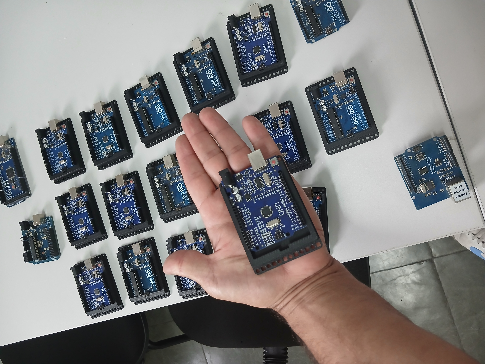
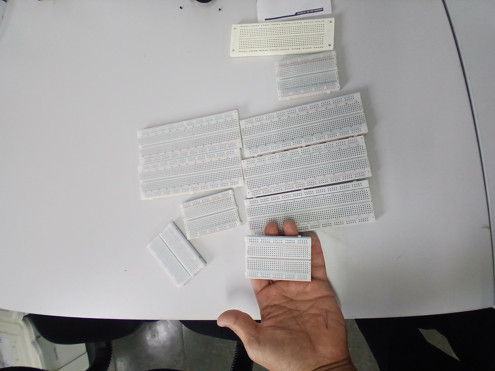
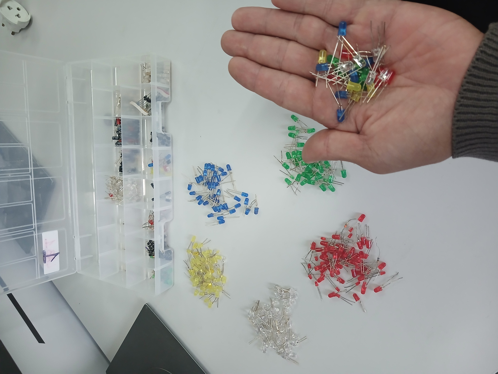
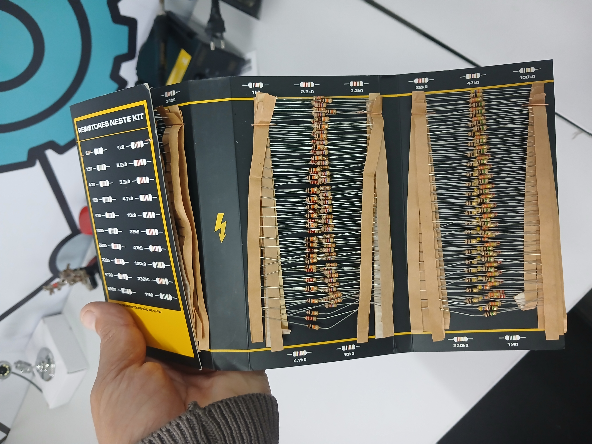
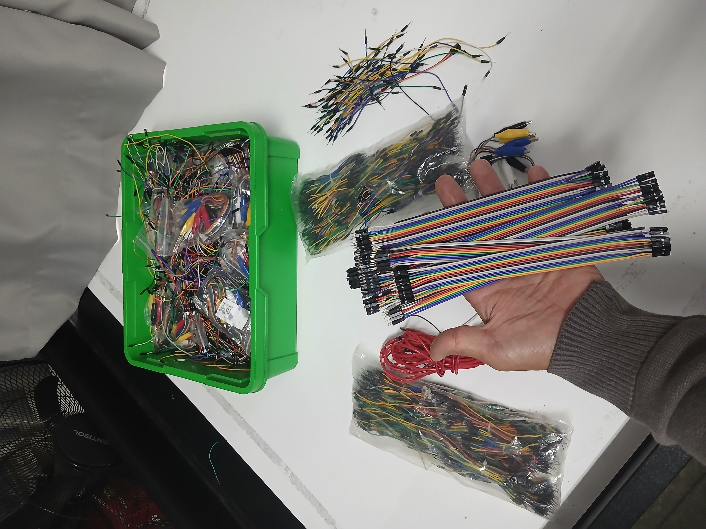
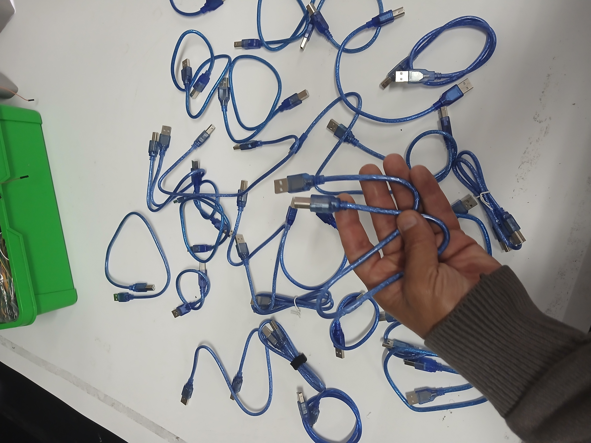
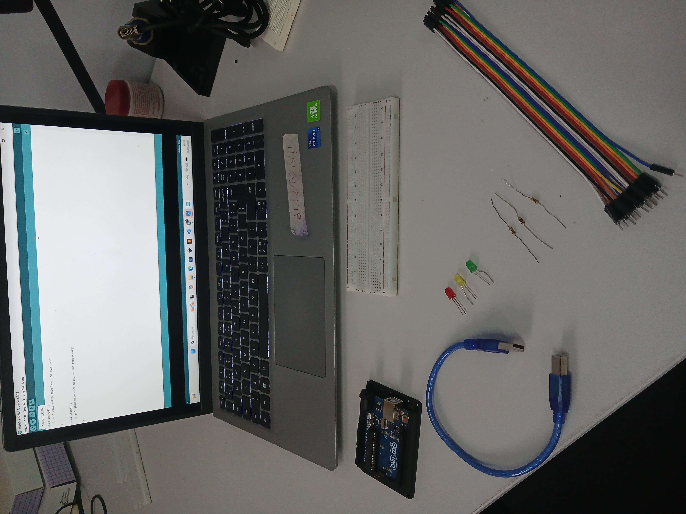
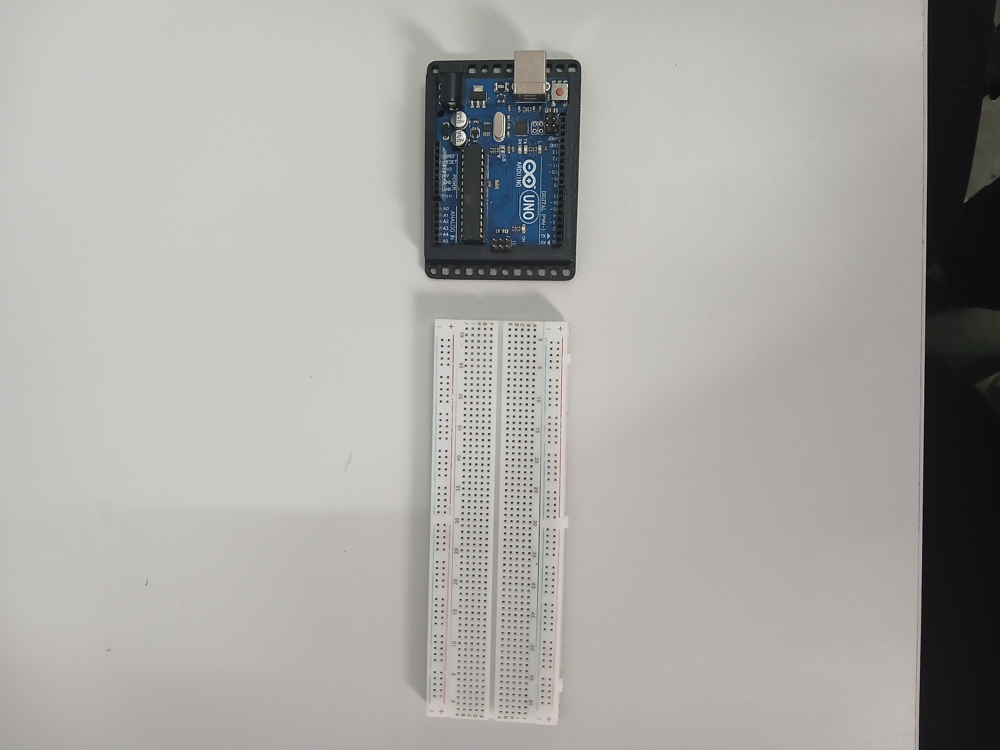

Semáforo de Carros com Arduino
Aprenda a montar, programar e compreender o funcionamento de um sistema de sinalização utilizando Arduino e componentes eletrônicos básicos.
O semáforo é um dos sistemas de sinalização mais utilizados no mundo. Ele organiza o trânsito, aumenta a segurança e controla o fluxo de veículos e pedestres por meio de uma sequência de luzes coloridas. Neste projeto você irá construir um modelo funcional de um semáforo utilizando a plataforma Arduino, LEDs, resistores e uma protoboard. Durante a atividade, aprenderá conceitos fundamentais de eletrônica, programação e lógica de funcionamento de sistemas automatizados. Ao longo desta página, cada etapa será apresentada de forma organizada, com explicações, imagens, desafios e exemplos práticos, permitindo que estudantes e professores acompanhem o desenvolvimento do projeto de maneira clara e progressiva.

Objetivos de Aprendizagem
Ao concluir este projeto, espera-se que você seja capaz de:
- Compreender a função de um semáforo e sua importância para a organização do trânsito.
- Identificar os principais componentes utilizados na montagem do circuito eletrônico.
- Montar corretamente um circuito utilizando Arduino, protoboard, LEDs, resistores e cabos de conexão.
- Desenvolver um programa simples para controlar a sequência de funcionamento das luzes do semáforo.
- Testar, analisar e corrigir possíveis erros durante a montagem e a programação.
- Relacionar os conhecimentos adquiridos com aplicações presentes no cotidiano e em sistemas automatizados.
- aprenderá a usar a plataforma Tinkercad criando simulacões com circuitos eletronicos e programação com arduino.
O que você irá desenvolver?
Durante esta atividade, você colocará em prática conhecimentos de diferentes áreas, como programação, eletrônica, lógica e resolução de problemas. Além disso, desenvolverá habilidades importantes, como observação, organização, trabalho em equipe, criatividade e pensamento computacional.O objetivo não é apenas montar um circuito que funcione, mas compreender como cada componente participa do projeto e como pequenas alterações no código podem modificar completamente o comportamento do sistema.
Onde encontramos um semáforo no dia a dia?
Os semáforos fazem parte da rotina de milhões de pessoas e desempenham um papel essencial na organização do trânsito. Eles utilizam sinais luminosos para orientar motoristas, ciclistas e pedestres, contribuindo para um deslocamento mais seguro e organizado. Embora sejam mais conhecidos nos cruzamentos das cidades, sistemas semelhantes também estão presentes em diversos outros ambientes, onde controlam o fluxo de pessoas, veículos e equipamentos de forma automática. Ao desenvolver este projeto, você estará construindo uma versão simplificada de um sistema utilizado diariamente em diferentes situações, compreendendo como a programação e a eletrônica trabalham juntas para controlar uma sequência de ações.
Como funciona um semáforo?
Um semáforo é um sistema de sinalização que organiza o fluxo de veículos e pedestres por meio de uma sequência programada de luzes. Cada cor possui uma função específica e informa aos usuários qual ação deve ser realizada em determinado momento. Em um ciclo básico, o semáforo alterna entre as luzes verde, amarela e vermelha, repetindo essa sequência continuamente para manter a circulação de forma segura e organizada. No projeto que desenvolveremos, o Arduino será responsável por controlar essa sequência automaticamente, acendendo e apagando cada LED no momento correto, simulando o funcionamento de um semáforo real.
O significado das cores
🟢 Luz Verde
Indica que a passagem está liberada. Os veículos podem seguir com atenção, respeitando as demais regras de trânsito.
🟡 Luz Amarela
É um sinal de atenção. Indica que a mudança para a luz vermelha está próxima e que o motorista deve reduzir a velocidade e preparar-se para parar, sempre observando as condições de segurança.
🔴 Luz Vermelha
Indica que os veículos devem parar antes da faixa de retenção, aguardando a próxima liberação da via.
💡 Você sabia?
Os semáforos modernos podem utilizar sensores, câmeras e sistemas inteligentes para adaptar o tempo de cada sinal de acordo com o fluxo de veículos. Esse tipo de tecnologia ajuda a reduzir congestionamentos, aumentar a segurança e melhorar a mobilidade urbana.
💬 Momento para refletir
- Por que o semáforo utiliza três cores diferentes?
- O que poderia acontecer se todas as luzes permanecessem acesas ao mesmo tempo?
- Como o Arduino "sabe" o momento certo de trocar cada luz?
- De que maneira a programação influencia o funcionamento desse sistema?
Conhecendo os Componentes do Projeto
Antes de iniciar a montagem do circuito, é importante conhecer os componentes que serão utilizados. Cada um deles possui uma função específica e, juntos, permitem que o Arduino controle o funcionamento do semáforo de forma automática. Ao compreender a função de cada componente, a montagem se torna mais fácil e a programação passa a fazer mais sentido.
Arduino Uno
O Arduino Uno é uma plataforma de prototipagem eletrônica baseada em um microcontrolador programável. Ele funciona como o "cérebro" do projeto, executando o programa desenvolvido e controlando todos os componentes conectados ao circuito. Durante este projeto, o Arduino será responsável por acender e apagar os LEDs na sequência correta, simulando o funcionamento de um semáforo.

Protoboard
A protoboard é uma placa de montagem que permite conectar componentes eletrônicos sem a necessidade de solda. Ela facilita a construção de protótipos, possibilitando realizar testes, modificações e correções de maneira rápida e segura. Na atividade, a protoboard será utilizada para organizar os LEDs, resistores e cabos de conexão.

LED (Diodo Emissor de Luz)
O LED é um componente eletrônico capaz de emitir luz
quando percorrido por corrente elétrica. Cada cor possui
uma função específica no projeto:
🟢 Verde — Indica que os veículos podem seguir.
🟡 Amarelo — Indica atenção para a mudança do sinal.
🔴 Vermelho — Indica que os veículos devem parar.
Neste projeto, os LEDs representarão as luzes de um semáforo real.

Resistor
O resistor é responsável por limitar a passagem da corrente elétrica no circuito, protegendo os LEDs contra excesso de corrente. Sem esse componente, os LEDs podem ser danificados, reduzindo sua vida útil ou até deixando de funcionar.

Jumpers (Cabos de Conexão)
Os jumpers são fios utilizados para realizar as conexões entre o Arduino, a protoboard e os demais componentes do circuito. Eles permitem que os sinais elétricos sejam transmitidos corretamente entre os diferentes elementos da montagem.

Cabo USB
O cabo USB possui duas funções importantes durante a atividade:
- Alimentar o Arduino com energia elétrica.
- Enviar o programa desenvolvido no computador para a placa.
- Sem ele, não seria possível programar nem testar o projeto.

Materiais Necessários
Antes de iniciar a montagem do circuito, verifique se todos os materiais estão disponíveis sobre a bancada de trabalho. Organizar os componentes antes de começar facilita a montagem, evita interrupções durante a atividade e contribui para um ambiente de trabalho mais seguro e organizado
Componente:
- Arduino Uno
- Protoboard
- LED Vermelho
- LED Amarelo
- LED Verde
- Resistores de 220 Ω
- Cabos Jumpers
- Cabo USB
- Computador com Arduino IDE instalada

Preparando a Bancada de Trabalho
Antes de conectar qualquer componente, reserve alguns minutos para organizar o espaço de trabalho.
Uma bancada organizada ajuda a reduzir erros, facilita a identificação dos componentes e torna a montagem mais eficiente.
Confira os seguintes itens:
- Todos os componentes estão separados.
- O computador está ligado.
- O Arduino IDE está instalado e funcionando.
- O cabo USB está disponível.
- Os LEDs estão separados por cor.
- Os resistores estão identificados.
- A protoboard está limpa e em boas condições.
- Os cabos Jumpers estão organizados.
Boas práticas durante a montagem
Durante a atividade, procure manter os componentes organizados e manipule-os com cuidado. Evite puxar os cabos com força, mantenha a bancada limpa e siga cada etapa da montagem com atenção. Caso encontre alguma dificuldade, interrompa a montagem e analise o circuito antes de realizar novas conexões. Muitas vezes, pequenos detalhes, como um cabo conectado no local incorreto ou um LED invertido, podem impedir o funcionamento do projeto.
Dica do Professor
💡 Organização faz parte da aprendizagem.
Na robótica e na eletrônica, não basta apenas montar o circuito. Observar, organizar os materiais e conferir cada conexão antes de ligar o sistema são hábitos importantes que também fazem parte do processo de aprendizagem e do trabalho de engenheiros, técnicos e programadores.
📚 Objetivo desta etapa
Antes de iniciar a montagem, queremos que o estudante desenvolva um hábito importante: planejar antes de executar. Na robótica e na eletrônica, organizar os materiais, conferir os componentes e preparar corretamente a bancada de trabalho são etapas fundamentais para o sucesso de qualquer projeto. Muitos problemas podem ser evitados quando a montagem é realizada com calma, atenção e organização. Nesta etapa, o objetivo não é apenas separar os materiais, mas compreender a função de cada componente, verificar se todos estão em boas condições de uso e preparar um ambiente de trabalho seguro e organizado. Esses cuidados fazem parte da rotina de engenheiros, técnicos, programadores e profissionais da área tecnológica, contribuindo para o desenvolvimento de habilidades como planejamento, organização, responsabilidade e resolução de problemas.
Montagem do Circuito
Chegou o momento de colocar o projeto em prática. Nesta etapa, iniciaremos a montagem do circuito eletrônico que permitirá ao Arduino controlar o funcionamento do semáforo. A montagem será realizada em etapas, possibilitando compreender a função de cada componente antes de prosseguir para a próxima conexão. Trabalhar dessa maneira facilita a identificação de possíveis erros, torna a atividade mais organizada e contribui para uma aprendizagem mais significativa. Não tenha pressa. Observe atentamente cada imagem, leia as orientações e compare sua montagem com o modelo apresentado. Caso algo não funcione como esperado, revise cada etapa antes de continuar. Lembre-se de que, na robótica e na eletrônica, errar faz parte do processo de aprendizagem. Muitas descobertas acontecem justamente durante a análise e a correção de um circuito. Ao final desta seção, você terá montado um protótipo funcional do semáforo de carros e estará preparado para programar o Arduino e compreender como a sequência das luzes é controlada.
Posicionando a Protoboard e o Arduino
Antes de realizar qualquer conexão elétrica, organize corretamente os principais componentes sobre a bancada de trabalho. Posicione o Arduino Uno ao lado da protoboard, deixando espaço suficiente para realizar as conexões com conforto e segurança. Essa organização facilita a visualização do circuito, reduz a possibilidade de erros durante a montagem e torna o trabalho mais eficiente. Neste momento, ainda não será necessário conectar nenhum cabo ou componente eletrônico. O objetivo é apenas preparar a área de montagem para as próximas etapas.

Dica
Procure posicionar a protoboard sempre no mesmo
sentido apresentado nas imagens do projeto. Isso facilitará o
acompanhamento da montagem e evitará conexões em posições incorretas.
Atenção
Não conecte o cabo USB ao computador neste momento. Todas as conexões do circuito devem ser realizadas com o Arduino desligado, reduzindo o risco de danos aos componentes e aumentando a segurança durante a montagem.Inserindo os LEDs na Protoboard
Com o Arduino e a protoboard devidamente posicionados,
iniciaremos a montagem inserindo os LEDs que representarão as luzes do semáforo.
Utilize um LED verde, um LED amarelo e um LED vermelho.
Posicione-os na protoboard deixando um pequeno espaço entre eles,
facilitando as conexões que serão realizadas nas próximas etapas.
Ao inserir os LEDs, observe atentamente a posição de seus terminais.
Cada LED possui dois terminais com funções diferentes:
Ânodo (terminal maior):
responsável por receber a corrente elétrica.Cátodo (terminal menor): responsável pelo retorno da corrente ao circuito (GND).
A posição correta dos LEDs é fundamental para o funcionamento do projeto. Caso um LED seja instalado invertido, ele não acenderá mesmo que o programa esteja correto.Dica
Organize os LEDs na mesma ordem em que um semáforo real funciona:🔴 Vermelho
🟡 Amarelo
🟢 Verde
Essa organização facilitará a identificação das conexões e tornará o circuito mais intuitivo durante a programação.
Por que estamos fazendo isso?
Antes de conectar qualquer fio, precisamos definir onde cada LED ficará instalado. Esse planejamento facilita a montagem, reduz erros e permite visualizar melhor o funcionamento do circuito antes mesmo de iniciar as ligações elétricas.Conectando os Resistores
Com os LEDs posicionados corretamente, é hora de instalar os resistores. Embora sejam componentes pequenos, eles desempenham um papel fundamental no funcionamento e na proteção do circuito. Cada LED deverá ser conectado a um resistor de 220 Ω (ohms). O resistor limita a corrente elétrica que passa pelo LED, evitando que ele receba uma corrente maior do que suporta. Durante a montagem, conecte um resistor a cada LED, conforme o esquema elétrico apresentado na atividade. Verifique cuidadosamente se os terminais estão bem encaixados na protoboard e se cada resistor está ligado ao LED correspondente.
Dica
Os resistores não possuem lado correto para instalação. Eles podem ser conectados em qualquer orientação, desde que estejam posicionados nos pontos corretos do circuito.Atenção
Nunca conecte um LED diretamente ao Arduino sem utilizar um resistor. O excesso de corrente pode danificar o componente e comprometer o funcionamento do projeto.Por que estamos fazendo isso?
O resistor funciona como um dispositivo de proteção. Ele controla a quantidade de corrente elétrica que atravessa o LED, garantindo seu funcionamento seguro e aumentando sua vida útil.Você sabia?
Os resistores são utilizados em praticamente todos os equipamentos eletrônicos, como computadores, celulares, televisores e eletrodomésticos. Eles ajudam a controlar a corrente elétrica, protegendo componentes sensíveis e garantindo o funcionamento adequado dos circuitos.Realizando as Conexões Elétricas
Com os LEDs e os resistores devidamente instalados na protoboard, chegou o momento de realizar as conexões elétricas utilizando os cabos jumpers. Cada jumper será responsável por estabelecer a comunicação entre o Arduino e os componentes do circuito. É por meio dessas conexões que os sinais elétricos enviados pelo Arduino chegarão aos LEDs, permitindo controlar o acendimento de cada luz do semáforo. Realize as ligações seguindo cuidadosamente o diagrama do projeto. Após conectar cada cabo, confira novamente sua posição antes de prosseguir para a próxima conexão.
Dica
Faça uma conexão por vez. Após concluir cada ligação, compare sua montagem com a imagem apresentada na atividade. Esse hábito facilita a identificação de possíveis erros e evita retrabalho.Atenção
Evite utilizar cabos muito esticados ou cruzados sobre os componentes. Além de dificultarem a visualização do circuito, eles podem atrapalhar futuras manutenções e aumentar a chance de conexões incorretas.Por que estamos fazendo isso?
Os cabos jumpers funcionam como caminhos por onde os sinais elétricos percorrem o circuito. Sem essas conexões, o Arduino não consegue enviar comandos aos LEDs, impossibilitando o funcionamento do semáforo.Conferindo o Circuito
Antes de conectar o Arduino ao computador, reserve alguns minutos para revisar toda a montagem. Essa conferência é uma etapa essencial e ajuda a identificar possíveis erros antes que o circuito seja energizado. Observe atentamente cada componente e compare sua montagem com o diagrama e as fotografias apresentadas nesta página. Pequenos detalhes, como um cabo conectado na posição incorreta ou um LED invertido, podem impedir o funcionamento do projeto. Lembre-se: revisar faz parte do processo de construção. Muitas vezes, um problema pode ser resolvido simplesmente conferindo as conexões com calma e atenção.
O que verificar?
Antes de prosseguir, confira os seguintes itens:
- Os LEDs estão posicionados corretamente?
- Os resistores estão conectados aos LEDs?
- Os jumpers foram ligados nos pinos corretos do Arduino?
- Todos os cabos estão firmemente encaixados?
- O circuito está organizado e semelhante ao modelo apresentado?
Dica
Realize a conferência seguindo uma ordem. Comece pelos LEDs, depois verifique os resistores, os jumpers e, por último, as conexões com o Arduino. Essa estratégia reduz a chance de esquecer algum detalhe.Atenção
Não altere várias conexões ao mesmo tempo. Caso encontre um erro, corrija apenas uma ligação, verifique novamente o circuito e só então prossiga. Essa prática facilita a identificação da causa do problema caso o circuito não funcione como esperado.Por que estamos fazendo isso?
Na eletrônica e na robótica, revisar o trabalho antes de energizar o circuito é um procedimento de segurança e qualidade. Além de proteger os componentes, essa prática desenvolve atenção aos detalhes, organização e pensamento crítico, habilidades importantes para qualquer profissional da área tecnológica.Checklist Final
- LEDs instalados corretamente.
- Resistores conectados.
- Jumpers posicionados conforme o diagrama.
- Arduino pronto para receber o programa.
- Circuito revisado e pronto para os testes.
Preparando o Arduino para Programação
O circuito já está montado e revisado. Agora chegou o momento de enviar um programa para o Arduino, permitindo que ele controle automaticamente o funcionamento do semáforo. Para isso, utilizaremos a Arduino IDE (Integrated Development Environment), o ambiente de desenvolvimento oficial da plataforma Arduino. É por meio desse programa que escreveremos, editaremos e enviaremos o código para a placa. Antes de iniciar a programação, conecte o Arduino ao computador utilizando o cabo USB. Em seguida, abra a Arduino IDE e realize as configurações iniciais.
Configurando a Arduino IDE
Antes de enviar o programa para a placa, verifique as seguintes configurações:- O Arduino está conectado ao computador pelo cabo USB.
- A Arduino IDE está aberta.
- A placa Arduino Uno foi selecionada.
- A porta de comunicação (COM) correspondente ao Arduino foi selecionada.
- O circuito permanece conectado conforme a montagem realizada anteriormente.
Dica
Sempre confirme se a placa e a porta de comunicação estão corretas antes de enviar um programa. Essa simples conferência evita muitos erros durante a programação.Atenção
Caso a Arduino IDE não reconheça a placa automaticamente, verifique se o cabo USB está conectado corretamente e se a porta selecionada corresponde ao Arduino utilizado na atividade.Por que estamos fazendo isso?
O Arduino executa apenas os programas que são enviados para sua memória. Antes de controlar qualquer componente eletrônico, é necessário preparar corretamente o ambiente de programação para que a comunicação entre o computador e a placa ocorra de forma segura e eficiente.Conferindo
- Arduino conectado ao computador.
- Arduino IDE aberta.
- Placa Arduino Uno selecionada.
- Porta de comunicação configurada.
- Ambiente pronto para enviar o programa.
Entendendo o Programa
Até este momento, preparamos o circuito eletrônico e configuramos o ambiente de programação. Agora chegou a hora de conhecer o programa que fará o Arduino controlar o funcionamento do semáforo. Um programa é uma sequência organizada de instruções que informa ao computador ou ao microcontrolador exatamente o que deve ser feito. No Arduino, essas instruções são escritas em uma linguagem de programação baseada em C/C++ e executadas na ordem em que foram programadas. Sempre que enviamos um programa para o Arduino, a placa passa a executar essas instruções automaticamente, controlando os componentes conectados ao circuito. Antes de analisar o código completo, é importante compreender duas partes fundamentais presentes em praticamente todos os programas desenvolvidos para Arduino.
A função setup()
A função setup() é executada apenas uma vez, logo após o Arduino ser ligado ou reiniciado. Nessa etapa, normalmente configuramos os pinos que serão utilizados, definindo quais funcionarão como entrada e quais funcionarão como saída. Essas configurações preparam a placa para executar corretamente o restante do programa.A função loop()
Após concluir o setup(), o Arduino passa a executar continuamente a função loop(). Tudo o que estiver dentro dessa função será repetido inúmeras vezes enquanto a placa permanecer ligada. No projeto do semáforo, será justamente dentro do loop() que a sequência das luzes verde, amarela e vermelha acontecerá continuamente, simulando o funcionamento de um semáforo real.Como o Arduino executa o programa?
De forma simplificada, o funcionamento acontece da seguinte maneira:- O Arduino é ligado.
- A função setup() é executada uma única vez.
- A função loop() inicia sua execução.
- Ao chegar ao final do loop(), o Arduino retorna automaticamente ao início da mesma função.
- Esse processo se repete continuamente até que a placa seja desligada.
Por que estamos fazendo isso?
Compreender a estrutura básica de um programa facilita a leitura do código e ajuda a identificar a função de cada comando. Em vez de apenas copiar instruções, você passará a entender como o Arduino interpreta e executa cada etapa da programação.Preparado para programar?
Na próxima seção, analisaremos o código completo do projeto. Cada comando será explicado individualmente, permitindo compreender sua função e sua importância no funcionamento do semáforoConhecendo os Principais Comandos
Antes de analisar o código completo do projeto, vamos conhecer alguns dos comandos mais utilizados na programação do Arduino. Compreender a função de cada um deles facilitará a leitura do programa e ajudará a entender como o semáforo será controlado.
const int
Esse comando é utilizado para declarar uma constante inteira. No projeto do semáforo, ele será utilizado para armazenar o número do pino ao qual cada LED está conectado. Dessa forma, o programa fica mais organizado e facilita futuras alterações.Exemplo:
const int ledVerde = 8;
Nesse exemplo, o LED verde está conectado ao pino digital 8 do Arduino.
pinMode()
O comando pinMode() define a função de um pino da placa Arduino. No projeto, os pinos conectados aos LEDs serão configurados como saída (OUTPUT), permitindo que o Arduino envie sinais elétricos para acender ou apagar cada LED.Exemplo:
pinMode(ledVerde, OUTPUT);
digitalWrite()
O comando digitalWrite() é utilizado para controlar o estado de um pino digital. Quando utilizamos HIGH, o pino fornece tensão elétrica. Quando utilizamos LOW, o fornecimento de tensão é interrompido. No projeto do semáforo, esse comando será responsável por acender e apagar cada LED.Exemplo:
digitalWrite(ledVerde, HIGH);
delay()
O comando delay() faz o Arduino aguardar um determinado tempo antes de executar a próxima instrução. O tempo é informado em milissegundos.Por exemplo:
1000 milissegundos = 1 segundo
2000 milissegundos = 2 segundos
5000 milissegundos = 5 segundos
Exemplo:
delay(3000);
Nesse caso, o Arduino aguardará três segundos antes de continuar executando o programa.
HIGH
HIGH indica que o pino digital ficará em nível lógico alto. Na prática, significa que o Arduino enviará tensão ao pino, permitindo o acionamento do componente conectado, como um LED.LOW
LOW indica que o pino digital ficará em nível lógico baixo. Nesse estado, o Arduino deixa de fornecer tensão ao pino, desligando o componente conectado.Por que estamos estudando esses comandos?
Conhecer esses comandos antes de analisar o programa torna a leitura do código mais simples e significativa. Em vez de apenas copiar instruções, você compreenderá a função de cada comando e perceberá como eles trabalham juntos para controlar o funcionamento do semáforo.Preparado para o próximo passo?
Agora que você conhece os principais comandos da linguagem Arduino utilizados neste projeto, está preparado para analisar o código completo, compreender sua lógica de funcionamento e realizar pequenos testes para personalizar o comportamento do semáforo.Código Completo do Projeto
Agora que você já conhece os principais comandos utilizados na programação do Arduino, chegou o momento de analisar o código completo do projeto. Leia o programa com atenção antes de enviá-lo para a placa. Procure identificar os comandos estudados anteriormente, como const int, pinMode(), digitalWrite() e delay(). Você perceberá que eles trabalham em conjunto para controlar a sequência de funcionamento do semáforo. Após copiar o código para a Arduino IDE, revise todas as conexões do circuito e certifique-se de que a placa e a porta de comunicação foram selecionadas corretamente.
Código do Projeto
📌 Insira aqui o código completo do projeto do semáforo. // Cole aqui o programa completo desenvolvido para este projeto.O que este programa faz?
Quando o programa é enviado para o Arduino, a placa passa a controlar automaticamente os LEDs do circuito.A sequência executada será:
- Acender o LED verde durante o tempo programado.
- Apagar o LED verde e acender o LED amarelo.
- Apagar o LED amarelo e acender o LED vermelho.
- Reiniciar automaticamente essa sequência, repetindo o ciclo continuamente enquanto o Arduino permanecer ligado.
Antes de enviar o programa
Confira novamente os seguintes itens:
- O circuito foi montado corretamente.
- O Arduino está conectado ao computador.
- A placa Arduino Uno está selecionada.
- A porta de comunicação (COM) está correta.
- O código foi copiado sem alterações.
Dica
Caso o programa apresente algum erro de compilação, leia atentamente a mensagem exibida pela Arduino IDE. Muitas vezes, um pequeno detalhe, como um caractere ausente ou um nome digitado incorretamente, pode impedir o envio do programa.Atenção
Não desconecte o cabo USB enquanto o programa estiver sendo enviado para o Arduino. Aguarde a conclusão do processo antes de realizar qualquer alteração no circuito.Por que estamos fazendo isso?
O programa é responsável por controlar todo o funcionamento do projeto. Sem ele, o Arduino não saberá quando acender ou apagar cada LED. A programação é o que transforma um circuito eletrônico em um sistema automatizado capaz de executar tarefas de forma precisa e repetitiva.Analisando o Código Linha por Linha
Programar não significa apenas escrever comandos. Um bom programador é capaz de compreender a função de cada linha do programa e como elas trabalham em conjunto para controlar um sistema. Nesta etapa, analisaremos os principais trechos do código do semáforo. O objetivo não é decorar comandos, mas entender a lógica utilizada para que o Arduino controle a sequência das luzes.
Declaração das constantes
const int ledVerde = 8;const int ledAmarelo = 9;
const int ledVermelho = 10;
Essas linhas informam ao Arduino em quais pinos cada LED está conectado. Utilizar constantes torna o código mais organizado e facilita futuras alterações. Se um LED for conectado em outro pino, basta alterar o número nessa parte do programa.
Configurando os pinos
pinMode(ledVerde, OUTPUT);pinMode(ledAmarelo, OUTPUT);
pinMode(ledVermelho, OUTPUT);
Esses comandos aparecem dentro da função setup(). Eles configuram os pinos como saídas, permitindo que o Arduino envie sinais elétricos para acender e apagar os LEDs. Essa configuração é realizada apenas uma vez, quando a placa é ligada.
Acendendo o LED verde
digitalWrite(ledVerde, HIGH);delay(5000);
Primeiro, o Arduino envia energia para o LED verde utilizando o comando digitalWrite(). Em seguida, o comando delay() mantém esse LED aceso durante cinco segundos.
Apagando o LED verde
digitalWrite(ledVerde, LOW);Após o tempo programado, o Arduino interrompe o fornecimento de energia para o LED verde, fazendo com que ele se apague.
Acendendo o LED amarelo
digitalWrite(ledAmarelo, HIGH);delay(2000);
O mesmo processo acontece com o LED amarelo. O Arduino liga o LED, aguarda o tempo definido no programa e, posteriormente, o desliga.
Acendendo o LED vermelho
digitalWrite(ledVermelho, HIGH);delay(5000);
Por fim, o LED vermelho permanece aceso pelo tempo programado, indicando que os veículos devem permanecer parados. Após esse período, o programa retorna ao início da função loop(), reiniciando automaticamente toda a sequência.
O que aprendemos?
Ao analisar cada trecho do programa, percebemos que o funcionamento do semáforo é resultado da combinação de poucos comandos executados em uma sequência lógica. Essa organização facilita a leitura do código, torna a manutenção mais simples e permite criar novos projetos reutilizando os mesmos conceitos.Reflita
Antes de continuar, tente responder às seguintes perguntas:
- O que aconteceria se o tempo do LED amarelo fosse aumentado?
- Como poderíamos fazer o LED verde permanecer aceso por mais tempo?
- O que seria necessário modificar para adicionar um semáforo de pedestres?
- É possível criar uma sequência diferente utilizando os mesmos comandos?
Testando o Projeto
Chegou o momento de verificar se o circuito e o programa estão funcionando corretamente. Após enviar o código para o Arduino, observe atentamente o comportamento dos LEDs e compare o funcionamento do seu projeto com a sequência esperada. Durante os testes, procure identificar se cada LED acende no momento correto e permanece ligado pelo tempo programado. Caso o resultado seja diferente do esperado, não se preocupe. A análise e a correção de pequenos erros fazem parte do processo de aprendizagem.
Sequência esperada
🟢 O LED verde acende.🟢 O LED verde apaga.
🟡 O LED amarelo acende.
🟡 O LED amarelo apaga.
🔴 O LED vermelho acende.
🔴 O LED vermelho apaga.
🔄 A sequência reinicia automaticamente.
📷 Foto sugerida: Circuito em funcionamento com os LEDs acesos em diferentes momentos da sequência.
O que observar durante o teste?
Durante o funcionamento do projeto, responda às seguintes perguntas:- Todos os LEDs acendem corretamente?
- A ordem das cores está correta?
- O tempo de cada LED corresponde ao programado?
- O ciclo reinicia automaticamente?
- Existe algum LED que permanece apagado ou aceso o tempo todo?
Registrando os resultados
Anote suas observações durante o teste.
- O circuito funcionou na primeira tentativa? ☐ Sim ☐ Não
- Foi necessário corrigir alguma ligação? __________________________
- Foi necessário alterar o código? __________________________
- O projeto está funcionando corretamente? ☐ Sim ☐ Não
Dica
Sempre realize um teste após cada alteração no circuito ou no código. Modificar vários elementos ao mesmo tempo dificulta descobrir a origem de um possível problema.Por que estamos fazendo isso?
Testar um projeto é uma etapa essencial em qualquer processo de desenvolvimento tecnológico. Antes que um sistema seja utilizado na prática, ele precisa ser verificado para garantir que funciona de acordo com o planejado. Esse processo desenvolve a capacidade de observar, analisar resultados e propor soluções, habilidades fundamentais para quem trabalha com programação, robótica e eletrônica.Checklist Final
- O programa foi enviado com sucesso.
- O circuito está funcionando corretamente.
- A sequência das luzes está correta.
- Os tempos estão de acordo com o programa.
- O projeto foi testado e validado.
Solução de Problemas
Durante a montagem e a programação, é normal encontrar algumas dificuldades. Na robótica e na eletrônica, identificar a causa de um problema faz parte do processo de aprendizagem. Antes de desmontar o circuito ou alterar o programa, observe atentamente o comportamento do projeto e compare sua montagem com o diagrama e as fotografias apresentadas nesta página. A tabela abaixo apresenta algumas situações comuns e possíveis formas de resolvê-las.